釣行日誌 故郷編
2023/09/22 彼岸、クモの巣、墓参り
故郷の、父母、祖父母の墓参りに名を借りて.....
その実態は、昨夜の雨の増水狙い！
今日は県境を越え、以前ルアーでそこそこ良かった渓へ来た。村はずれに車を停め、橋の上から水況を伺うと、願ったりの笹濁りである。支度をして、林道を歩いて下る。
今日は、この間、九月の遠征で、改めてフライの面白さに目覚めたので、調子に乗ってフライフィッシングに戻ってみる。
沢伝いに降りて行くと、暗い渓谷になっている。スギ、ヒノキの細長い木々が鬱蒼として、どちらかというとイワナっぽい渓である。
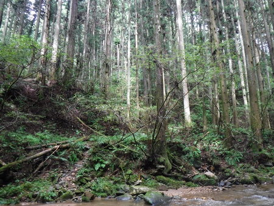
とりあえず、ドライフライ、小さめのアダムスを結んで、しばし、釣り下る。ところがあまり反応が無い。ルアーとは違い、ドライフライやニンフでは、小渓流での釣り下がりはリスクが大きいのかも知れなかった。
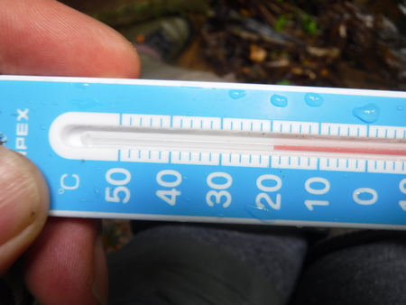
引き返して、今まで攻めたポイントを探りつつ、今度は釣り上がって行く。長い淵が現れて、気配を殺し、足音を忍ばせ、目いっぱい近づいてからロングキャスト（当社比）(笑)
淵の真ん中でピシャッと飛沫が上がり、クンクンと竿を引き絞る。ネットに収まったのは、そこそこのサイズのアマゴ。とても綺麗である。久しぶりのアマゴとの対面に、心が震えた。
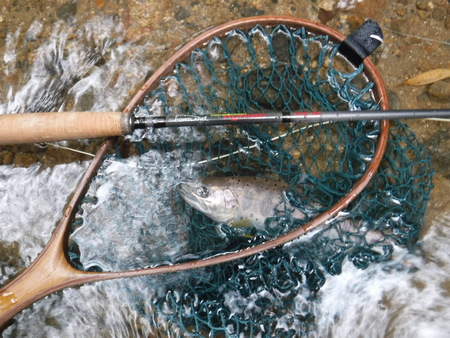
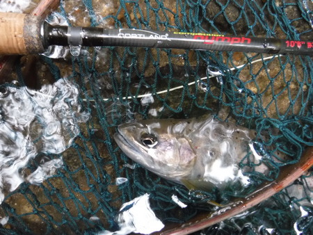
気を良くして釣り上がると、渓が開けてきた。至る所にクモの巣が張っている。
『しめしめ.....』
キャスティングには支障になるのだが、今日は誰もこの区間には入っていないという証である。田んぼの横の石垣の深みを、よく見えるパラシュートで探る。被さったクモの巣と、両岸の枝を避けつつ、何とかキャストが出来る状態。
振り込みやすい方の岸から、ちょっとした深みに黒いパラシュート：オレンジ色のポスト付きを振り込む。流れて来るフライに大きな影が飛び出た。グイグイ！(笑) と引くのをいなして、慎重にネットですくい上げる。体高のある、これぞアマゴ！という一尾だった。
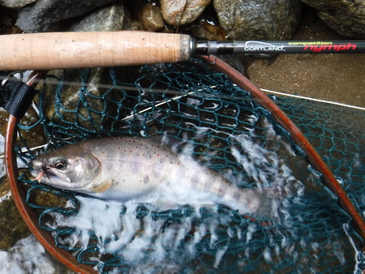
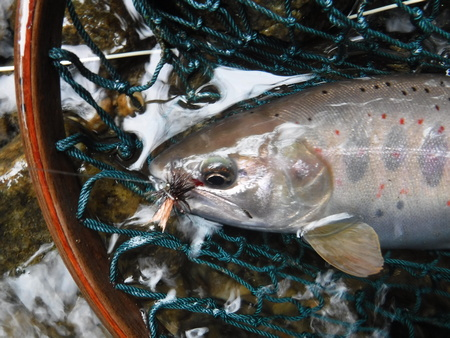
それからというもの、竿を出すポイント、ポイントで、連続して釣れ出した。どうやら普段から人があまり入っていないのか、今日の状況が良すぎたのか、どっちか.....らしい。
今日はコートランドのニンフロッド 10ft半を使っているのだが、長竿故に合わせてからの取り込みが難しい。ついつい竿を高く上げるので、上の枝に当たってヒヤヒヤものである。
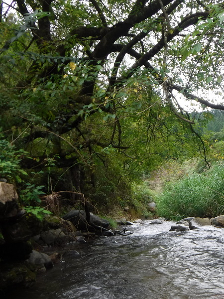
しかし、イワナとアマゴのファイトは全然違うなぁ.....と思う。ギュンギュン、グルグルと高回転なの良型アマゴの引きを久しぶりに楽しみながら釣り上がる。
笹のボサ下で良型がヒットしたが、最後の詰めを油断して、取り込みを焦り､バラす。泣けた。まだまだ修行が足りない。
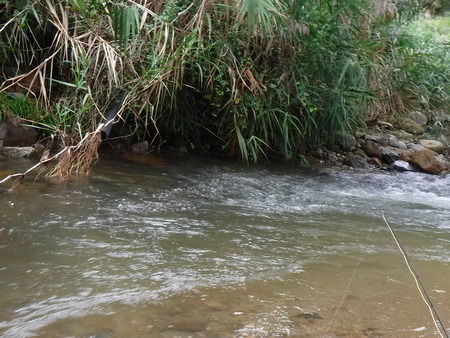
今度は、葦の生え際の横から飛び出した。実に見事なプロポーションの一尾だった。
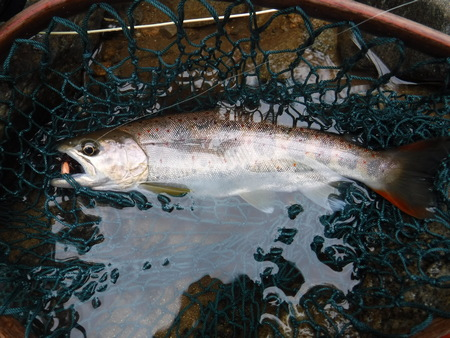
小淵の流れ込みの流芯脇で、パラシュートが消えた。ロッドを下流側に引いて合わせると、なかなかの引き。頭上の枝をかわし、大物の引きに耐え、わりと粘られたがようやくキャッチ。実に良いアマゴだった。
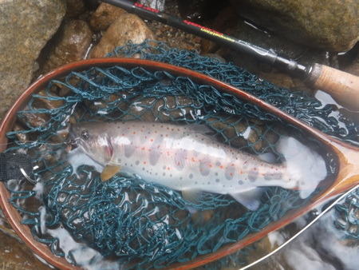
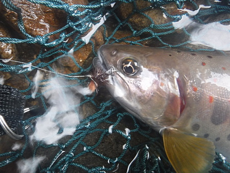
掌に抱くと、幅の広い魚体の脈動が伝わり、心だけが一気に小学三年生の春にジャンプする。父に連れられて行った川で、難しいアマゴの合わせに悪戦苦闘のあげく、何とかかんとか小さな淵で３尾釣り上げることが出来たのだった。父が、帰りにまたやってみれば、まだ居るぞ。と言うので帰途竿を同じ小淵に出すと、本当にもう２尾釣れた。嬉しかった。
その次の週に、友達と行った地元の川で、26cm くらいのアマゴを釣ったのが、人生を大きく変えたのだった。(笑)堰堤のそばにあった桜の木に、良型アマゴをぶら下げて、友達に自慢したのが、まるで昨日のことのようである。
橋の下の暗い淵で､また良型をキャッチ。気を良くしてこれを最後の１尾とする。
父にこれらの写真を見せたら、
『夏に、こんな藪沢の、瀬で釣れれば、お前もちったぁマシになったな.....』
ぐらいの言葉をかけてくれるだろうか？
それとも、いつものように、
『写真だけ撮って逃がさずに､一尾くらい持って来て焼いて食わせろ』
などと言うだろうか？
あるいは、
『お前なぁ、下手の長竿って諺を知っとるか？』
てな皮肉を繰り出すか.....？
良く肥えて走りまくった晩夏のアマゴを掌に抱くと、昔の思い出のあれこれが胸に湧き上がって、思わず涙が頬を伝い、二粒、三粒と、水温20℃の流れに消えた。
帰途、実家のあった集落に寄り、墓参りを済ませる。彼岸花の赤が目に染みて、アマゴの朱点と冷たい肌の感触が甦った。父の没年を確かめていると、
『アメノウオはなぁ、水の良いときに行かんと釣れんだぞ。』
という名人の訓が墓石から響いてきた。
釣行日誌 故郷編 目次へ
サイトマップ
ホームへ
お問い合わせ